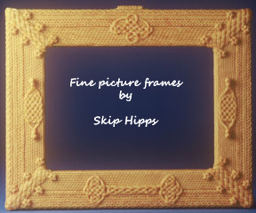
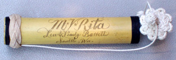
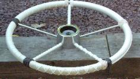
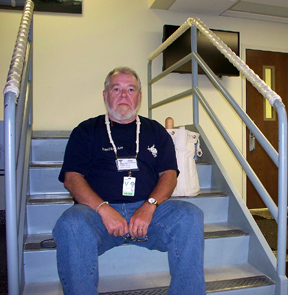

Welcome to all, and thank you for stopping by to look over my wares. I have been doing fancy-work on-and-off for over fifty-five years, ever since I was initially taught it by an old sailor who lived quite close to me. I used the know-ledge through my Navy days and have now taken it up again as a full-time business.
I make belts, lanyards, wheel-coverings, tiller-wraps, hand-rail wraps, bellropes of varying complexity, instrument straps, camera straps, luggage slings... if you can do it with a piece of line, I've probably either made it or seen it. I can do MacNamara's lace and mast skirts, but they tend to get very expensive due to the great amount of time involved.
Scrimshaw is made in the traditional method using needles and graphite (for lampblack is not something one can find about the house these days) and is usually done on bamboo or bone for needlecases, although I will attempt other materials on pre-paid order. As I make more of this it will eventually migrate to it's own page(s), provided my hands hold up!
Belts are "made-to-length" (although I do keep some standard-length belts on hand) and vary from simple squareknots throughout, to ten-diamond designs, open and filled diamonds, chevrons and crosses, etc., etc. Prices run from $120.00 for a small plain belt up through the roof for specialty items. I also can make suspenders (galluses), one example of which is shown on the knotpics page.
Wheels are coxcombed along the rim of the wheel (aesthetically, I prefer to leave the spokes un-flemished as it produces a 'floating' effect on the rim fancywork, but if you wish, I can also do work on them as well) and can either be done at my location (if you ship me a wheel to work on) or I can travel to your location to do the work.
I also do stair rails, companionways, or anything that's round and needs flemishing. It's quite pricey but for those who love the look, a definite plus for their vessel or home/workplace. This is a picture of me after doing three flights of stairs for The Joint Strike Fighter people in Maryland.
Well, since you are, let me switch hats to my non-commercial one and talk a bit about the Library section of the site.
In there you will find pictures of fancywork and other nautical-type items (mostly handmade) which occupied the time of a great many sailor-men during the age of sail. When you were on a whale-ship and looking at four years before you returned to your home port, and sometimes six months between landfalls, it was next to impossible to stay occupied and sane, especially when you consider that a whaler carried more men than were necessary to just work the ship, so most men either did scrimshaw with scraps of whalebone from their harvests or, more rarely, fancy knotwork. Admittedly, I tend toward the knotwork. Go visit.
There are also pages on Tutorials on making ropework, pages devoted to just one knottyer's work, pages for knottyers who have gone on to Fiddler's Green and so forth... it's an interesting place I've got here and you'll never know just what you may find in the orlop!
Extra Links for Help: